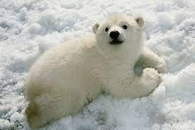
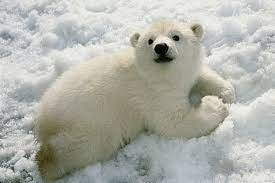

Polar Info
Common Name: Polar Bear
Scientific Name: Ursus maritimus
Type: Mammal
Diet: Carnivore
Average lifespan in the wild: 25 to 30 years
Adult Size: 7.25 to 8 ft (2.2 to 2.5 m)
Adult Weight: 900 to 1,600 lbs (410 to 725 kg)
Habitat: Arctic Ocean, sea ice, and adjacent coastal areas
Status: Vunerable
Polar Details
Polar bears live along shores and on sea ice in the icy cold Arctic. When sea ice forms over the ocean in cold weather, many polar bears, except pregnant females, head out onto the ice to hunt seals. Polar bears primarily eat seals. Polar bears often rest silently at a seal's breathing hole in the ice, waiting for a seal in the water to surface. A polar bear may also hunt by swimming beneath the ice. Polar bears rely heavily on sea ice for traveling, hunting, resting, mating and, in some areas, maternal dens. But because of ongoing and potential loss of their sea ice habitat resulting from climate change-the primary threat to polar bears Arctic-wide-polar bears were listed as a threatened species in the US under the Endangered Species Act in May 2008. Ice melts earlier and re-forms later than it has in the past. Without the sea ice, the polar bear must scavenge for other, less nutritious food. As their sea ice habitat recedes earlier in the spring and forms later in the fall, polar bears are increasingly spending longer periods on land, where they are often attracted to areas where humans live.
Polar bears roam the Arctic ice sheets and swim in that region's coastal waters. They are very strong swimmers, and their large front paws, which they use to paddle, are slightly webbed. Some polar bears have been seen swimming hundreds of miles from land—though they probably cover most of that distance by floating on sheets of ice. In fall pregnant polar bears make dens in earth and snowbanks, where they'll stay through the winter and give birth to one to three cubs. In spring the mother emerges from her den followed by her cubs. During that time she will protect them and teach them how to hunt.
Source:
Polar Facts
- The U.S., Canada, Denmark, Norway, and Russia signed an agreement in 1973 to protect polar bears.
- Under their fur, polar bears have black skin, which soaks in the sun's warming rays.
- Polar bear cubs learn how to defend themselves by play fighting.
- Polar bears spend over 50% of their time hunting for food.
- Considered talented swimmers, polar bears can sustain a pace of six miles per hour by paddling with their front paws and holding their hind legs flat like a rudder.
- Their eyes are different to normal bears. Like domestic cats, giant panda bears have vertical slits for pupils.
- They have a thick layer of body fat (about 4 inches) and a water-repellent coat that insulates them from the cold air and water.
- The polar bear's Latin name, Ursus maritimus, means "sea bear."
- Polar bears have 3 eyelids to protect them from the harsh weather conditions.
- Polar bears can swim 100 miles at a stretch.
Source:
Polar In Daily Life
Polar as an Artist
Polar as a Song
Polar as a Jellycat